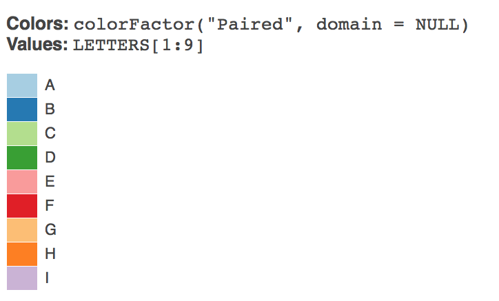
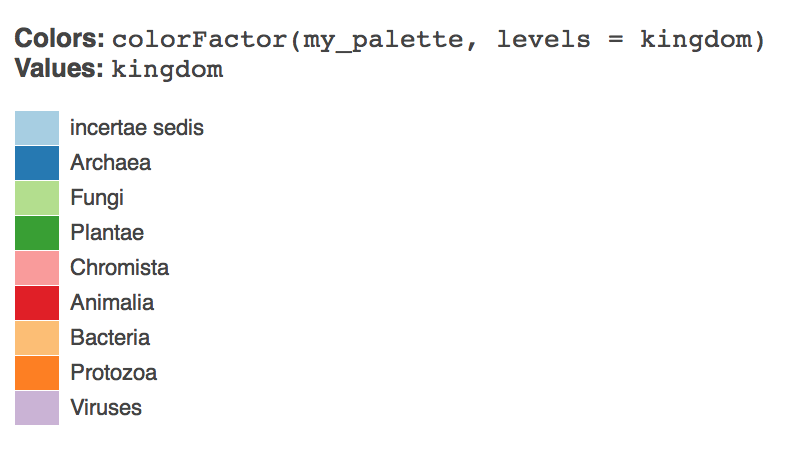

In the last section we discussed how to obtain and then process data from the Global Biodiversity Information Facility using the rgbif package from rOpenSci in R with RStudio.
In this section we explore one of the real strengths of GBIF data by visualizing the data for Kenya on a map using the popular leaflet library. We will then create an online interactive version of the map as a Shiny app.
The image below from the GBIF website displays a global map of occurrence records.
It is important to bear in mind that we can only visualize those records for a particular country or region where georeferenced coordinates (latitude and longitude) are provided with GBIF occurrence records. As such records with coordinates will be a subset of the wider occurrence records set. In connection with access and benefit-sharing under the Nagoya Protocol this is one, among other, reasons why researchers should be encouraged to record georeferenced data when collecting samples.
Most visual representations are static, with a growing trend towards maps that we can zoom into (as in the case of GBIF maps). However, this raises the question of whether it is possible to create interactive maps that allow the reader to explore the data in more detail.
A growing number of software tools are now available for the creation of interactive maps. In this section we will use the popular open source leaflet JavaScript library to create interactive maps for species data that are interactive and mobile friendly.
The creation of maps with unfamiliar software can be somewhat intimidating. We will use the leaflet package developed by RStudio and use the RStudio tutorial as a guide to using leaflet and adapt as we go along.
Happily, it is quite straightforward to learn to use leaflet and the data preparation steps in this walk through could quite easily be done in either another programming language or with Open Office Calc or Excel. Creating an online app with Shiny is more challenging but is easier when the basic principles behind Shiny are understood.
First, make sure that you have R and RStudio installed for your system by following the installation instructions.
Next, install the leaflet package and if you have not done so already install the tidyverse packages. tidyverse packages are a set of packages that focus on data wrangling and are extremely useful for data preparation.
install.packages("leaflet")
install.packages("tidyverse")
installed.packages("shiny")Now load the libraries we will need. Don’t worry if you see a warning message.
library(leaflet)
library(tidyverse)Let’s try to visualize some GBIF data occurrence data. For this test we will use Kenya occurrence data from January 2017 with the following doi for citation: doi:10.15468/dl.b04fyt.
An earlier article walked through the process of downloading an occurrence dataset from GBIF and then cleaning up the data to remove those records that do not contain coordinate data. You can find that article here.
The file containing those results can be found on Github here ADD.
load("data/kenya_occurrence.rda")There are a number of steps that we need to take to prepare the dataset for mapping. These involve:
The leaflet package will attempt to guess the name of the latitude and longitude columns in a dataset. Because GBIF calls them decimallatitude and decimallongitude, which is difficult to guess, it makes sense to rename them using the nice and easy dplyr rename() function.
library(dplyr)
kenya_occurrence <- dplyr::rename(kenya_occurrence, latitude = decimallatitude,
longitude = decimallongitude)In the previous section we filtered the data on the taxonrank column for species. In exploring the data we discovered that the occurrence records are heavily dominated by observations for birds as we can see below.
library(tidyverse)
kenya_gbif %>% drop_na(class) %>% count(class, sort = TRUE)## # A tibble: 122 × 2
## class n
## <chr> <int>
## 1 Aves 416835
## 2 Insecta 68932
## 3 Mammalia 64124
## 4 Magnoliopsida 48989
## 5 Liliopsida 23984
## 6 Amphibia 14510
## 7 Reptilia 13383
## 8 Actinopterygii 8964
## 9 Gastropoda 4812
## 10 Protosteliomycetes 3939
## # ... with 112 more rowsWe now want to filter out these records because they will flood the map. Here we will filter the kenya_occurrence dataset. We will save this dataset to a new set called kenya_occ
library(tidyverse)
kenya_occ <- filter(kenya_occurrence, class != "Aves")This reduces our occurrence data to 105,853 occurrence records from 444,228.
Next, let’s simply adapt the code from the RStudio tutorial to see what we learn and adapt as we go along. This example uses pipes ( %>% for this then that) so that we only have to name the dataset in the first line. If you are new to pipes then try Sean Anderson’s tutorial or the excellent new R For Data Science by Garrett Grolemund and Hadley Wickham.
We will start with a smaller dataset with 20 rows to learn with and then work our way up.
kenya_20 <- kenya_occ[1:20, ]To get started we use the leaflet() function and run a test with the kenya_20 dataset. Then we will add the default OpenStreetMap tiles used in leaflet. Next we will use addMarkers() and specify longitude and latitude with a pop up marker by selecting the kenya_occurrence species column using the $ dollar sign.
This provides us with some important clues on what will happen when we adapt the RStudio code.
library(dplyr)
library(leaflet)
k <- leaflet::leaflet(kenya_20) %>%
addTiles() %>% # Add default OpenStreetMap map tiles
addMarkers(~longitude, ~latitude, popup = kenya_20$species)
k Hmmm, we now have a map with a few points but not the 20 we were expecting. If we click on a blue marker the species name will pop up. So, the code is picking up some of the names but not others. This suggests we need to look at the data in more detail.
If you are working with your own data and have not previously prepared the data by filtering on taxonrank species and to filter NAs, part of the explanation will lie with the need for data preparation. However, it also becomes clear that for some coordinates we have exactly the same georeferences as we see below for Parmotrema andinum.
library(dplyr)
kenya_20 %>% select(species, latitude, longitude) %>% print()## # A tibble: 20 × 3
## species latitude longitude
## <chr> <dbl> <dbl>
## 1 Bulbothrix isidiza -1.274 37
## 2 Caloplaca ochraceofulva -0.356 36
## 3 Caloplaca flavorubescens -3.367 39
## 4 Canoparmelia nairobiensis -1.274 37
## 5 Canoparmelia texana -0.276 36
## 6 Cerastium afromontanum -0.164 37
## 7 Cerastium afromontanum -0.628 37
## 8 Cladonia hedbergii -0.167 37
## 9 Crassula granvikii -0.182 37
## 10 Lobelia aberdarica -0.515 35
## 11 Lobelia gregoriana -0.628 37
## 12 Lobelia gregoriana -0.350 37
## 13 Parmelinopsis horrescens -0.366 35
## 14 Parmotrema andinum -1.274 37
## 15 Parmotrema andinum -1.274 37
## 16 Parmotrema cooperi -0.163 36
## 17 Parmotrema eunetum 1.100 37
## 18 Parmotrema natalense -0.083 35
## 19 Parmotrema natalense -0.083 35
## 20 Rinodina groenhartii -0.417 36We do not need to take any action in these cases and leaflet is behaving as expected. Let’s sample 500 records across the table and see how it goes.
library(tidyverse)
set.seed(1)
kenya_500 <- kenya_occ %>% sample_n(500)
kenya_500## # A tibble: 500 × 44
## gbifid datasetkey
## <int> <chr>
## 1 183706538 09baff40-d4a3-11dc-8719-b8a03c50a862
## 2 47414991 85818aea-f762-11e1-a439-00145eb45e9a
## 3 1270009958 7e380070-f762-11e1-a439-00145eb45e9a
## 4 177626402 68efc55e-f762-11e1-a439-00145eb45e9a
## 5 1056907247 7e380070-f762-11e1-a439-00145eb45e9a
## 6 1052778786 e6c97f6e-e952-11e2-961f-00145eb45e9a
## 7 142746983 b276cb50-d3ea-11dc-ab69-b8a03c50a862
## 8 1230338192 1aaec653-c71c-4695-9b6e-0e26214dd817
## 9 476568766 4bfac3ea-8763-4f4b-a71a-76a6f5f243d3
## 10 912192321 cd6e21c8-9e8a-493a-8a76-fbf7862069e5
## # ... with 490 more rows, and 42 more variables: occurrenceid <chr>,
## # kingdom <chr>, phylum <chr>, class <chr>, order <chr>, family <chr>,
## # genus <chr>, species <chr>, infraspecificepithet <chr>,
## # taxonrank <chr>, scientificname <chr>, countrycode <chr>,
## # locality <chr>, publishingorgkey <chr>, latitude <dbl>,
## # longitude <dbl>, coordinateuncertaintyinmeters <dbl>,
## # coordinateprecision <dbl>, elevation <dbl>, elevationaccuracy <dbl>,
## # depth <dbl>, depthaccuracy <dbl>, eventdate <chr>, day <int>,
## # month <int>, year <int>, taxonkey <int>, specieskey <int>,
## # basisofrecord <chr>, institutioncode <chr>, collectioncode <chr>,
## # catalognumber <chr>, recordnumber <chr>, identifiedby <chr>,
## # license <chr>, rightsholder <chr>, recordedby <chr>, typestatus <chr>,
## # establishmentmeans <chr>, lastinterpreted <chr>, mediatype <chr>,
## # issue <chr>We now input kenya_500 into the code.
library(leaflet)
species <- leaflet(kenya_500) %>% addTiles() %>% addMarkers(~longitude, ~latitude,
popup = kenya_500$species)
speciesOur kenya_500 dataset reveals that some of the coordinates are outside the boundaries of Kenya. Let’s take a look at a couple of those records that illustrate the nature of the problem.
kenya_500 %>% filter(species == "Medicago laciniata" | species == "Chaetodon guttatissimus") %>%
select(species, latitude, longitude, countrycode, locality, issue) %>% print()## # A tibble: 2 × 6
## species latitude longitude countrycode
## <chr> <dbl> <dbl> <chr>
## 1 Chaetodon guttatissimus -40 40 KE
## 2 Medicago laciniata 0 0 KE
## # ... with 2 more variables: locality <chr>, issue <chr>We can see that in practice one record record actually lacks coordinates (recorded as 0) while in the other case, the latitude appears to be incorrect. GBIF notes these potential problems in the issue column for country coordinate mismatch and zero coordinate. As such we have a data error.
kenya_500 %>% filter(species == "Medicago laciniata" | species == "Chaetodon guttatissimus") %>%
select(issue) %>% print()## # A tibble: 2 × 1
## issue
## <chr>
## 1 COORDINATE_ROUNDED;GEODETIC_DATUM_ASSUMED_WGS84;COUNTRY_COORDINATE_MISMATCH
## 2 ZERO_COORDINATE;GEODETIC_DATUM_ASSUMED_WGS84;COUNTRY_COORDINATE_MISMATCH;REThere are a number of ways we could deal with this. We could filter the results with no actual coordinates out and then seek to identify relevant Geodetic data and coordinate issues in the issue column. This would involve unpacking that column (using dplyr::separate_rows() with ; as the separator), then carefully assessing the entries and filtering the results accordingly (e.g. to take out zero_coordinate and country_coordinate_mismatch).
An alternative approach is to adjust the boundaries of the map to exclude records outside Kenya. We will demonstrate this approach here because it is useful for narrowing down maps for other purposes.
To narrow the occurrence records to those within the boundaries of Kenya we first need to obtain georeference information on the boundaries. To do that we can use the geonames web service through the geonames R package from Barry Rowlingson.
install.packages("geonames")and then load the library.
library(geonames)## No geonamesUsername set. See http://geonames.wordpress.com/2010/03/16/ddos-part-ii/ and set one with options(geonamesUsername="foo") for some services to workTo use the API we need to sign up for a free account with geonames from here. As we can see above, when we load the geonames package we will receive a warning that no geonamesUsername set. To do that we run this code with your own username.
library(geonames)
options(geonamesUsername = "yourusername")Next, and optionally, run the test files below (generating a lot of returns and not shown) to check that you can access the service.
source(system.file("tests", "testing.R", package = "geonames"), echo = TRUE)To get the boundaries for a country we need to access the country info. The data that we are after is on this page
To access that information with the geonames package we use the two letter country code from here or, if you are planning to do a lot of work with country codes, see the useful countrycode package:
kenya_geonames_info <- GNcountryInfo(country = "KE")
kenya_geonames_infoThe information that we want is the following:
library(dplyr)
library(geonames)
bounds <- kenya_geonames_info %>% select(south, north, east, west)
bounds## south north east west
## 1 -4.678047 5.019938 41.899078 33.908859The raw xml from the country table can be seen below.
http://api.geonames.org/countryInfo?username=demo
<country>
<countryCode>KE</countryCode>
<countryName>Kenya</countryName>
<isoNumeric>404</isoNumeric>
<isoAlpha3>KEN</isoAlpha3>
<fipsCode>KE</fipsCode>
<continent>AF</continent>
<continentName>Africa</continentName>
<capital>Nairobi</capital>
<areaInSqKm>582650.0</areaInSqKm>
<population>40046566</population>
<currencyCode>KES</currencyCode>
<languages>en-KE,sw-KE</languages>
<geonameId>192950</geonameId>
<west>33.908859</west>
<north>5.019938</north>
<east>41.899078</east>
<south>-4.678047</south>
<postalCodeFormat>#####</postalCodeFormat>
</country>Next we want to set the boundaries. RStudio helpfully points out how to do this with the following code.
First we can use setView to centre the View using Nairobi as the example.
library(leaflet)
nairobi <- leaflet() %>% addTiles() %>% setView(lng = 36.821946, lat = -1.292066,
zoom = 12)
nairobiNote above that longitude (lng) is followed by latitude (lat). If you find yourself unexpectedly in the middle of an ocean then you need to reverse the coordinates.
A useful quick tool for finding the latitude and longitude of a specific place is http://www.latlong.net/. Otherwise geonames is probably best.
Next, we want to fit the bounds of the map by adding additional information. It is important to note the order in which coordinates are set here (see setView in the leaflet documentation).
The Rstudio examples are:
fitBounds(map, lng1, lat1, lng2, lat2)
# or
setMaxBounds(map, lng1, lat1, lng2, lat2)Let’s call up the bounds table to see the coordinates.
bounds## south north east west
## 1 -4.678047 5.019938 41.899078 33.908859West and East are the longitude coordinates and North and South are the latitudes. Let’s try that with our Nairobi map above.
library(leaflet)
fb <- fitBounds(nairobi, lng1 = bounds$west, lat1 = bounds$north, lng2 = bounds$east,
lat2 = bounds$south)
fbThat works just fine. Now let’s try the setMaxBounds controls.
.
library(leaflet)
mb <- setMaxBounds(nairobi, lng1 = bounds$west, lat1 = bounds$north, lng2 = bounds$east,
lat2 = bounds$south)
mbThat basically brings us back to the Nairobi view.
If we wanted to clear the boundaries from a particular view we would use clearBounds() to take us back to the world view.
library(leaflet)
nairobi %>% clearBounds()Next we would like to see our data inside the fit bounds. First we need our map object to fit the bounds too with the markers and then we need to fit the bounds using fitBounds(). We will use the kenya_500 set.
library(leaflet)
species <- leaflet(kenya_500) %>% addTiles() %>% addMarkers(~longitude, ~latitude,
popup = kenya_500$species) %>% fitBounds(lng1 = bounds$west, lat1 = bounds$north,
lng2 = bounds$east, lat2 = bounds$south)
speciesIn practice, if we were to zoom out of this map we would still see the other data points outside the boundaries of Kenya. That is fine if we are happy with that.
What we need to do if we want to only see records that fall inside Kenya is to deliberately exclude records that fall outside the boundaries of Kenya.
To exclude coordinates we need to generate information on the max and min latitude and longitude in the kenya_occ_ref dataset. We need four max and min values for that.
max_lat <- max(kenya_occ$latitude)
max_lon <- max(kenya_occ$longitude)
min_lat <- min(kenya_occ$latitude)
min_lon <- min(kenya_occ$longitude)
max_min_lat_lon <- tibble::tibble(max_lat, max_lon, min_lat, min_lon)
max_min_lat_lon## # A tibble: 1 × 4
## max_lat max_lon min_lat min_lon
## <dbl> <dbl> <dbl> <dbl>
## 1 62 143 -41 -153boundsWe now need to identify the data points that occur between these coordinates. We will use the dplyr::between() function for that.
library(tidyverse)
lat_between <- kenya_occ$latitude[between(kenya_occ$latitude, -4.678047, 5.019938)]
lon_between <- kenya_occ$longitude[between(kenya_occ$longitude, 33.908859, 41.899078)]If we print the length of lat_between it is 105552. We can quickly calculate the latitude markers outside the latitude as follows.
length(kenya_occ$latitude) - length(lat_between)## [1] 301and the same for longitude
length(kenya_occ$longitude) - length(lon_between)## [1] 2374We now want to exclude the lat and long values outside the boundaries. The question then is how to approach this? It makes sense to start by excluding those values that are outside the longitude for Kenya (east, west). Let’s try that using %in% to add a logical TRUE/FALSE where TRUE will be records falling between the longitude values and false will be outside. Then the same for latitude.
kenya_occ$long_out <- kenya_occ$longitude %in% lon_between
kenya_occ$lat_out <- kenya_occ$latitude %in% lat_betweenNext we filter to a new data frame on the logical to include first only those where the longitude is within the between values and second to those where the lat is inside the between values. We will overwrite our existing kenya_occ dataset.
kenya_occ <- filter(kenya_occ, long_out == "TRUE") %>% filter(lat_out == "TRUE")The result is a new data frame with 103295 rows.
Now that we have cleaned up the data let’s create a decent sized sample and then draw a map.
set.seed(1)
kenya_3000 <- sample_n(kenya_occ, 3000)map <- leaflet(kenya_3000) %>% addTiles() %>% addMarkers(~longitude, ~latitude,
popup = kenya_3000$species) %>% fitBounds(lng1 = bounds$west, lat1 = bounds$north,
lng2 = bounds$east, lat2 = bounds$south)
mapIf we zoom out of this map we will see that the vast majority of records falling outside the Kenya boundary box have been excluded. So we now have a map focused on Kenya that excludes extraneous records.
Because we are using a bounding box, and country boundaries are not boxes, we will still encounter extraneous records in nearby countries. To be more precise we would need to find a suitable shapefile for kenya. Or, we could use a geoJSON file such as this one or this one from OpenAfrica (not tested).
For the moment we will test how our new kenya_occ file has worked out and start by reducing the table to relevant columns in a new object we will call kenya_slim.
kenya_slim <- select(kenya_occ, gbifid, kingdom, species, latitude, longitude,
locality)
head(kenya_slim)## # A tibble: 6 × 6
## gbifid kingdom species latitude longitude
## <int> <chr> <chr> <dbl> <dbl>
## 1 653826 Fungi Bulbothrix isidiza -1.27 37
## 2 664444 Fungi Caloplaca ochraceofulva -0.36 36
## 3 664565 Fungi Caloplaca flavorubescens -3.37 39
## 4 673178 Fungi Canoparmelia nairobiensis -1.27 37
## 5 673247 Fungi Canoparmelia texana -0.28 36
## 6 693924 Plantae Cerastium afromontanum -0.16 37
## # ... with 1 more variables: locality <chr>Visualising many thousands of data points is likely to result in memory problems or sluggish performance. We can work our way around this by clustering the markers.
Clustering involves the addition of clusterOptions to the code as below. We will try this with the full kenya_slim dataset.
map <- leaflet(kenya_slim) %>% addTiles() %>% fitBounds(lng1 = bounds$west,
lat1 = bounds$north, lng2 = bounds$east, lat2 = bounds$south) %>% addCircleMarkers(~longitude,
~latitude, popup = kenya_slim$species, radius = 1, fillOpacity = 0.5, clusterOptions = markerClusterOptions())
mapThis works fine, and does not create memory problems. If we click on one of the clusters other clusters will open up and we can navigate around the country cluster by cluster. As we drill down we will able to click on the individual markers to see the name of the species.
To change the markers from the default we use the addCircleMarkes control along with the specification of the circle radius, weight, opacity, fill and fillOpacity. We will use the kenya_3000 set to illustrate this but you are likely to want to experiment with these settings.
map <- leaflet(kenya_3000) %>% addTiles() %>% addCircleMarkers(~longitude, ~latitude,
popup = kenya_3000$species, radius = 1, weight = 2, opacity = 0.5, fill = TRUE,
fillOpacity = 0.2)
mapIn the data above we have changed the data from the large markers to circle markers. Let’s look at this in more detail and use categories to colour the data.
There are a number of controls that can be used to set the colours within leaflet maps including colorBin, colorFactor, colorNumeric and colorQuantile and it is well worth studying the package documentation and the examples in the Leaflet tutorial.
To colour the markers we need to use a colour palette. The ColorBrewer palettes are well known and can be viewed and tested out on the ColorBrewer website. Inside R we can use the RColorBrewer package. First we need to install the package.
install.packages("RColorBrewer")Load the library
library(RColorBrewer)ColorBrewer contains three types of palette:
It is the qualitative (categorical) palettes that we want, to give distinct colors to our kingdoms. The qualitative palettes are:
Accent 8 Dark2 8 Paired 12 Pastel1 9 Pastel2 8 Set1 9 Set2 8 Set3 12
If we visit the color brewer website we can test out the colors across the three types. The name of the palette appears in the URL based on your choices, for example: http://colorbrewer2.org/#type=qualitative&scheme=Paired&n=7
We need to define the categories that will be used for the colours. In this case we will want to colour by kingdom. But bear in mind that an individual dataset may not include all of the kingdoms used in the GBIF taxomony. The Kingdoms used in GBIF are:
Animalia Archaea Bacteria Chromista Fungi incertae sedis Plantae Protozoa Viruses
So, for use across multiple datasets we will want 9 colour categories. A colour will be allocated to NA (Not Available) by default and so we do not need to worry about that.
With leaflet we can preview the colours we want to apply to our categorical data. This works better run in the console than in an Rmarkdown document.
library(RColorBrewer)
library(leaflet)
previewColors(colorFactor("Paired", domain = NULL), LETTERS[1:9])
We now need a vector of names to associate with the colours in the palette. Note that I have cheated by organising the kingdom names to match to the colours that I want. For example, I want Animalia to be red and Plantae to be green (and I am not so bothered about the others).
kingdom <- c("incertae sedis", "Archaea", "Fungi", "Plantae", "Chromista", "Animalia",
"Bacteria", "Protozoa", "Viruses")Then we create a palette from brewer.pal.
library(RColorBrewer)
my_palette <- brewer.pal(9, "Paired")Let’s test it.
library(RColorBrewer)
previewColors(colorFactor(my_palette, levels = kingdom), kingdom)
Now lets create that as a colorFactor.
factpal <- colorFactor(my_palette, levels = kingdom)Lets add the colours to the maps for our sample data.
species_circle <- leaflet(kenya_3000) %>% addTiles() %>% addCircleMarkers(~longitude,
~latitude, popup = kenya_3000$species, radius = 1, weight = 2, opacity = 0.5,
fill = TRUE, fillOpacity = 0.2, color = ~factpal(kingdom))
species_circleIt will be helpful to add some controls to the map. We can do this by adding layers.
We can readily add layer controls to the map, either to add layers (for example for national parks) or as in this case to allow users to select data by kingdom. The code below is adapted from a Stack Overflow answer from marbel. This approach uses a forloop to loop over the contents of the dataset and assign the data to groups.
library(leaflet)
groups = unique(kenya_3000$kingdom)
map = leaflet(kenya_3000) %>% addTiles(group = "OpenStreetMap")
for (i in groups) {
data = kenya_3000[kenya_3000$kingdom == i, ]
map = map %>% addCircleMarkers(data = data, ~longitude, ~latitude, radius = 1,
weight = 2, opacity = 0.5, fill = TRUE, fillOpacity = 0.2, color = ~factpal(kingdom),
group = i)
}
map %>% addLayersControl(overlayGroups = groups, options = layersControlOptions(collapsed = FALSE))It may be that there is a more efficient (or rather legible) way of going about this but we will stick with this for the time being.
We have now created a control layer. There a quite a few other options we might pursue and we will look at those below. For the moment we will simply look at options to export our map.
As we saw earlier, we can simply add popup labels to the data using popup = data$species. However, we can go quite a lot further by creating hyperlinks to make our map interactive. For that we will need a function that will generate the hyperlinks and labels that we might want. We will then need to combine the hyperlinks into a single field for use as the labels.
The function allows for hyperlinks to be constructed for Google, Crossref, GBIF and the Lens (a patent database). The function takes four arguments. The vector of terms to be used in the search, the label for our marker (e.g. Lookup on Google) and the type of link (e.g. Google).
# function to create hyperlinks
map_url <- function(query, label = "NULL", type = "NULL") {
href <- "<a href="
close_href <- ">" #included for flexibility in labelling
close_a <- "</a>"
if (type == "google") {
query <- stringr::str_replace_all(query, " ", "+")
google_base <- "https://www.google.co.uk/#q="
url <- paste0(google_base, query)
out <- paste0(href, shQuote(url), close_href, label, close_a)
}
if (type == "crossref") {
query <- stringr::str_replace_all(query, " ", "+%2B")
crossref_base <- "http://search.crossref.org/?q=%2B"
url <- paste0(crossref_base, query)
out <- paste0(href, shQuote(url), close_href, label, close_a)
}
if (type == "gbif") {
query <- stringr::str_replace_all(query, " ", "+")
gbif_base <- "http://www.gbif.org/species/search?q="
url <- paste0(gbif_base, query)
out <- paste0(href, shQuote(url), close_href, label, close_a)
}
if (type == "lens") {
# note restriction to main jurisdictions and no stemming to reduce
# duplication and false positives
query <- stringr::str_replace_all(query, " ", "+")
lens_base <- "https://www.lens.org/lens/search?q="
url <- paste0(lens_base, "%22", query, "%22", "&jo=true&j=EP&j=JP&j=US&j=WO&st=false&n=50")
out <- paste0(href, shQuote(url), close_href, label, close_a)
}
out
}Next we need to use the function to add columns to our dataset. Note that here we are using the species name as the query.
# create columns with formatted links
kenya_3000$google <- map_url(kenya_3000$species, label = "Lookup Google", type = "google")
kenya_3000$crossref <- map_url(kenya_3000$species, label = "Lookup Crossref",
type = "crossref")
kenya_3000$lens <- map_url(kenya_3000$species, label = "Lookup Patents", type = "lens")
kenya_3000$gbif <- map_url(kenya_3000$species, label = "Lookup GBIF", type = "gbif")Next we need to combine the columns into one label with the HTML to make them look reasonably neat.
# combine links for use as a popup
kenya_3000$combined_label <- paste0("<br>", "<strong>", kenya_3000$species,
"</strong>", "</br>", "<br>", kenya_3000$google, "</br>", "<br>", kenya_3000$gbif,
"</br>", "<br>", kenya_3000$crossref, "</br>", "<br>", kenya_3000$lens,
"</br>")We now use the combined_label column as the value for the pop up field in our map.
library(leaflet)
groups = unique(kenya_3000$kingdom)
map = leaflet(kenya_3000) %>% addTiles(group = "OpenStreetMap")
for (i in groups) {
data = kenya_3000[kenya_3000$kingdom == i, ]
map = map %>% addCircleMarkers(data = data, ~longitude, ~latitude, popup = data$combined_label,
radius = 1, weight = 2, opacity = 0.5, fill = TRUE, fillOpacity = 0.2,
color = ~factpal(kingdom), group = i)
}
map %>% addLayersControl(overlayGroups = groups, options = layersControlOptions(collapsed = FALSE))If we seek to use the full dataset we will rapidly run into memory problems with leaflet when we move up beyond around 30,000 data points. There are a number of possible ways around this.
In this section we will test out the options for saving a discreet file. A workaround for the scale problem is provided by this Stack Overflow Answer. This involves using the saveWidget() function from the htmlwidgets package to a self contained file. In this test we set that value to TRUE,
library(leaflet)
library(dplyr)
library(htmlwidgets)
map <- leaflet(kenya_slim) %>% addTiles(group = "OpenStreetMap") %>% fitBounds(lng1 = bounds$west,
lat1 = bounds$north, lng2 = bounds$east, lat2 = bounds$south) %>% addCircleMarkers(~longitude,
~latitude, popup = kenya_slim$species, radius = 1, weight = 2, opacity = 0.5,
fill = TRUE, fillOpacity = 0.2, color = ~factpal(kingdom), clusterOptions = markerClusterOptions())
saveWidget(map, file = "kenya_gbif_map.html", selfcontained = TRUE)This produces a 20.5 MB self contained html file that will load in Safari but not in Chrome. As in the original SO suggestion let’s try setting the selfcontained value to FALSE.
library(leaflet)
library(dplyr)
library(htmlwidgets)
map1 <- leaflet(kenya_slim) %>% addTiles(group = "OpenStreetMap") %>% fitBounds(lng1 = bounds$west,
lat1 = bounds$north, lng2 = bounds$east, lat2 = bounds$south) %>% addCircleMarkers(~longitude,
~latitude, popup = kenya_occ1$species, radius = 1, weight = 2, opacity = 0.5,
fill = TRUE, fillOpacity = 0.2, color = ~factpal(kingdom), clusterOptions = markerClusterOptions())
saveWidget(map1, file = "kenya_gbif_map1.html", selfcontained = FALSE)That produces a html file with a folder with resources, however that also fails to load in Chrome. So, that is a conundrum that needs to be solved.
One option here, to reduce the weight of rendering the markers is to use the clustering function discussed above.
The memory issues that we encounter when we try and visualise large numbers of data points on a leaflet map suggest that we need a different approach. One logical way to do this is to store the data on a server and then serve it up as part of a web app. To do that we will use Shiny from RStudio.
install.packages("shiny")Load the library
library(shiny)Shiny is a web development framework that allows R code to be presented as an online web application. While this can seem intimidating at first Shiny is very well documented. To get started with Shiny try the following resources.
When I was working through the tutorials I found Dean Attali’s Building Shiny apps - an interactive tutorial incredibly useful as a step by step approach to building a functioning app. In particular, it helped to understand the issues involved in using reactive functions. Also helpful was Simon Goring’s Shiny Leaflet Tutorial. When starting out with Shiny it is often a good idea to look for examples that are similar to what you are thinking of doing and then work through them step by step to improve your understanding.
A Shiny App consists of two parts, a user interface (ui) and a server script (server).
The ui is html that appears on the app and holds one or more user controls (user inputs).
The server contains R code that runs when a user changes one of the controls. That is it responds to user inputs with outputs that are displayed to the user. In the Shiny terminology the functions in the server script are reactive. We don’t need to go into those details here but this article is well worth reading.
A standard shiny app template looks like this:
#library(shiny)
# other libraries used in the app
# R code that runs only once goes here e.g. import data, run calculations
# the user interface controls, e.g. drop down menus, sliders
ui <- fluidPage(
titlePanel("your title"),
sidebarLayout(
sidebarPanel(
# inputs such as selectors or sliders go here
),
# What the user sees
mainPanel(
# maps, tables, plots etc
)
)
server <- function(input, output){
# R code that reacts to user inputs
}
#shinyApp(ui = ui, server = server) # commented outShiny Apps come in two formats, the single page format (as above) and a two script format (ui.R and server.R) format. To learn Shiny it is easier to use the single page format to have the inputs and outputs on the same page.
One important rule of thumb is that code that only needs to run once should go outside the ui and server code (e.g. below where you run load any libraries). Code that will need to be recalculated (such as selecting Plants rather than Animalia) should go inside the code.
In the app below we start off by loading the libraries and then taking the code we have developed earlier in the article (the code that performs calculations and processes the data). This is followed by a basic responsive ui consisting of a slider and a download button and some narrative text.
In Shiny we can also use tabPanels for different displays. We will create 3.
To keep things neat we will use the kenya_slim dataset that we created above. However, in the download area we provide access to the full dataset we are using. This code can be run from the gbifapp folder here or you can visit the app at shinyapps.io
Lets start with the head of the app, which is basically code we have developed above.
# code that is run only once in the app
library(shiny)
library(leaflet)
library(dplyr)
library(RColorBrewer)
library(ggplot2)
library(data.table)
# use datatable fread to speed up loading
data <- fread("data/kenya_slim.csv", na.strings = c("", NA))
# Use a sample to stop things falling over
data <- sample_n(data, 30000)
# establish bounds for map view
bounds <- read.csv("data/bounds.csv", stringsAsFactors = FALSE)
# function to create hyperlinks
map_url <- function(query, label = "NULL", type = "NULL") {
href <- "<a href="
close_href <- ">" #included for flexibility in labelling
close_a <- "</a>"
if (type == "google") {
query <- stringr::str_replace_all(query, " ", "+")
google_base <- "https://www.google.co.uk/#q="
url <- paste0(google_base, query)
out <- paste0(href, shQuote(url), close_href, label, close_a)
}
if (type == "crossref") {
query <- stringr::str_replace_all(query, " ", "+%2B")
crossref_base <- "http://search.crossref.org/?q=%2B"
url <- paste0(crossref_base, query)
out <- paste0(href, shQuote(url), close_href, label, close_a)
}
if (type == "gbif") {
query <- stringr::str_replace_all(query, " ", "+")
gbif_base <- "http://www.gbif.org/species/search?q="
url <- paste0(gbif_base, query)
out <- paste0(href, shQuote(url), close_href, label, close_a)
}
if (type == "lens") {
# restrict patent searches to the main jurisdictions & no stemming to reduce
# duplication and false positives
query <- stringr::str_replace_all(query, " ", "+")
lens_base <- "https://www.lens.org/lens/search?q="
url <- paste0(lens_base, "%22", query, "%22", "&jo=true&j=EP&j=JP&j=US&j=WO&st=false&n=50")
out <- paste0(href, shQuote(url), close_href, label, close_a)
}
out
}
# create columns with formatted hyperlinks
data$google <- map_url(data$species, label = "Lookup Google", type = "google")
data$crossref <- map_url(data$species, label = "Lookup Crossref", type = "crossref")
data$lens <- map_url(data$species, label = "Lookup Patents", type = "lens")
data$gbif <- map_url(data$species, label = "Lookup GBIF", type = "gbif")
# combine links for use as popup in leafletproxy
data$combined_label <- paste0("<br>", "<strong>", data$species, "</strong>",
"</br>", "<br>", data$google, "</br>", "<br>", data$gbif, "</br>", "<br>",
data$crossref, "</br>", "<br>", data$lens, "</br>")
# create the color palette
kingdom <- sort(unique(data$kingdom))
# my_palette <- brewer.pal(length(kingdom), 'Paired')
load("my_palette.rda")
factpal <- colorFactor(my_palette, domain = kingdom, ordered = TRUE)Next we have the user interface.
# Create user interface
ui <- fluidPage(
titlePanel("Map a sample of GBIF Data"),
sidebarLayout(
sidebarPanel(
uiOutput("kenya_output"),
br(),
downloadButton("downloadData", "csv Download"),
br(),
br(),
h3("About"),
p("This app provides an example of the visualisation of species occurrence data for Kenya from the", a("Global Biodiversity Information Facility.", href="http://www.gbif.org/", target = "_blank")),
p("The raw data can be accessed from the following DOI and please cite as: GBIF.org (24th January 2017) GBIF Occurrence Download", a("http://doi.org/10.15468/dl.b04fyt", href="http://doi.org/10.15468/dl.b04fyt", target = "_blank"), ". The data was imported using", a("rgbif from ROpensci", href="https://github.com/ropensci/rgbif"), "and the site was built in", a("RStudio", href="https://www.rstudio.com/", target = "_blank"), "with", a("Shiny.", href="https://www.rstudio.com/products/shiny/", target = "_blank")),
p("The app does not use Cookies.")
),
mainPanel(width = 8, # maximum of 12
tabsetPanel(type = "tabs",
tabPanel("Map", leafletOutput("mymap")),
tabPanel("Summary", plotOutput("summary")),
tabPanel("Table", dataTableOutput("table"))
)
)
)
)Finally, we have the server that reacts to the inputs in the ui
# server controls
#server <- function(input, output){
output$kenya_output <- renderUI({
selectInput(inputId = "kingdom_input", "kingdom",
sort(unique(data$kingdom)),
selected = "Animalia")
})
# use renderLeaflet for elements of the map that don't change, note setting default sizes
output$mymap <- renderLeaflet({
leaflet(data) %>%
addTiles() %>%
addCircleMarkers(~longitude, ~latitude, popup = data$species, radius = 2, weight = 5, opacity = 0.5, fill= TRUE, fillOpacity = 0.2)
})
# Use leafletProxy for elements that change
observe({
set <- data %>%
filter(data$kingdom %in% input$kingdom_input)
leafletProxy("mymap") %>% clearMarkers() %>%
addCircleMarkers(lng = set$longitude,
lat = set$latitude, popup = data$combined_label, radius = 1, weight = 2, opacity = 0.5, fill= TRUE, fillOpacity = 0.2, color = factpal(input$kingdom_input))
})
# Add the table
output$table <- renderDataTable({
table <- data %>%
filter(data$kingdom %in% input$kingdom_input)
})
# Add summary plot counting species by occurrences. filter(n > 10) to limit swamping the chart. Note that the n value filter will often need adjustment for the dataset. Probably better to adjust to select just the top 20 rows here.
output$summary <- renderPlot({
data %>%
filter(data$kingdom %in% input$kingdom_input) %>%
count(species) %>%
dplyr::filter(n > 100) %>%
ggplot(aes(x = reorder(species, n), y = n, fill = species)) +
geom_bar(stat="identity", show.legend = FALSE) +
coord_flip() + labs(x = "species", y = "occurrences")
})
# Add the download file details
output$downloadData <- downloadHandler(
filename = function() {
paste("kenya_slim", ".csv", sep="")
},
content = function(file) {
file.copy("kenya_slim.csv", file)
}, contentType = "text/csv"
)
}
#shinyApp(ui = ui, server = server)In this article we have walked through the details of mapping GBIF occurrence data using the leaflet package in R. leaflet when combined with Shiny is a powerful tool for interactive visualization of GBIF data. However, it is important to recognise that the visualisation of more than 30,000 data points starts to present memory challenges when compared with alternatives (such as Tableau Public). Careful thought is therefore needed about how many data points you wish to share and with what purpose.
This may require alternative approaches to that presented here. For example we might:
In short, this article provides a start in considering the issues around the visualization of GBIF data in R rather than an end. Comments and suggestions for improvement are welcome through Github issues.